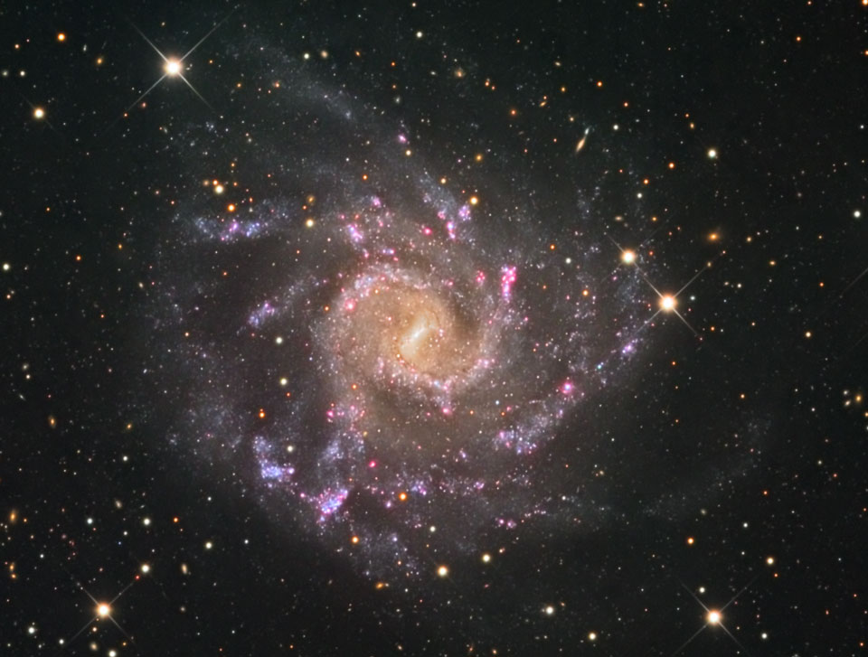

|  |
Galaxy clustering dependence on the [OII] emission line luminosity in the local Universe |
|
We study the galaxy clustering dependence on the [OII] emission line luminosity in the SDSS DR7 Main galaxy sample at mean redshift z ∼ 0.1. We select volume- limited samples of galaxies with different [OII] luminosity thresholds and measure their projected, monopole and quadrupole two-point correlation functions. We model these observations using the 1h−1Gpc MultiDark Planck cosmological simulation and generate light-cones with the SUrvey GenerAtoR algorithm. To interpret our results, we adopt a modified (Sub)Halo Abundance Matching scheme, accounting for the stellar mass incompleteness of the emission line galaxies. The satellite fraction constitutes an extra parameter in this model and allows to optimize the clustering fit on both small and intermediate scales (i.e. rp ≲30h−1Mpc), with no need of any velocity bias correction. We find that, in the local Universe, the [OII] luminosity correlates with all the clustering statistics explored and with the galaxy bias. This latter quantity correlates more strongly with the SDSS r-band magnitude than [OII] luminosity. In conclusion, we propose a straightforward method to produce reliable clustering models, entirely built on the simulation products, which provides robust predictions of the typical ELG host halo masses and satellite fraction values. The galaxy mock catalogues are publicly available on the Skies and Universes database. |
| Please click here to access the mocks or here to access the catalogs |
| If you use these catalogs or mocks, please cite Favole et al. 2016 and XXXXX et al. 2016. |
last update, nov. 2016, by G. Favole and J. Comparat